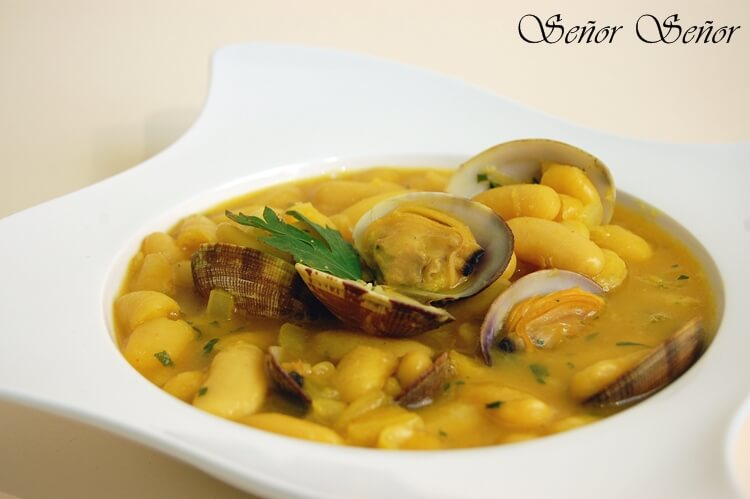
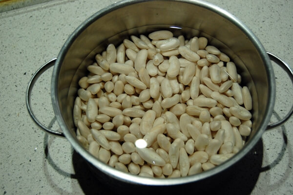

My Recipes
Alubias con almejas
Las alubias con almejas es un plato de cuchara que, de tan solo nombrarlo, empieza a apetecer. Es una receta muy completa y llena de sabor, además de una manera genial de probar las almejas si jamás las has comido. ¡El contraste de sabores te encantará! Puedes disfrutar de esta preparación como plato único, pues lleva todos los nutrientes y las energías necesarias de cualquier comida principal. En tiempo de guisos y climas fríos, no puedes dejar pasar esta receta. ¡Acompáñanos en My Recipes y descubre cómo hacer alubias con almejas!
Ingredientes para 4 personas:
- 400 gramos de alubias
- 400 gramos de almejas
- 2 cebollas
- 1 pimiento verde
- 3 ajos
- Sal
- 1 cucharadita de pimentón dulce
- Media chucharadita de pimentón picante
- Una hebra de azafrán
- Una cucharada de Harina
- Medio vaso de vino blanco
- Perejil fresco picado
- Una cayena
Como hacer Alubias con almejas
1.- Comenzamos poniendo en remojo las fabes la noche anterior en agua fría. Las fabes que sean de calidad.
2.- Al día siguiente ponemos en una cacerola grande y ancha las fabes, las cubrimos con agua fría y las ponemos a cocer a fuego fuerte.
3.- Una vez rompan a hervir las desespumamos y bajamos el fuego.

4.- Incorporamos a las fabes 2 ajos pelados, 1 cebolla cortada por la mitad y medio pimiento. Cocemos durante 2 horas a fuego lento. En este paso tenemos que “asustarlas”, es decir, incorporamos medio vaso de agua fría para cortar la cocción. Esto se hace para evitar que se pelen las fabes.

5.- A la media hora de empezar volvemos a “asustar” las fabes con medio vaso de agua fría en el que hemos disuelto el azafrán y el pimentón. Incorporamos sal al gusto y seguimos dejando cocinar otra hora y media. Cuidado con la sal que las almejas ya llevan sal y es mejor incorporar al final un poco que pasarnos y estropear las fabes. Pasados otros 30 minutos, cuando llevemos un hora de cocción volvemos a “asustarlas” con medio vaso de agua fría, y así cada 30 minutos hasta finalizar las 2 horas de cocción. Por lo tanto las hemos asustado 4 veces durante toda la cocción, hemos evitado que se pelen y que se consuma todo el caldo. Una vez tiernas las fabes retiramos la cebolla, los ajo y el pimiento, quitamos del fuego y reservamos.

6.- Por otra parte tenemos que hacer las almejas. En una sartén rehogamos una cebolla y un ajo picados finamente a fuego lento.

7.- Pasados unos minutos agregamos una cucharada de harina y una cayena, seguimos rehogando otro minuto para que se tueste un poco la harina.

8.- Añadimos media copa de vino blanco y un chorrito de agua. Dejamos que se cocine a fuego fuerte durante un minuto para que se evapore el alcohol.

9.- Ahora agregamos las almejas, tapamos y dejamos que abran.
10.- Una vez abiertas agregamos el perejil picado y dejamos cocinar 3 minutos más a fuego muy lento.

11.- Una vez cocinadas las fabes por un lado y las almejas por el otro, añadimos las almejas y el caldo resultante a las fabes. Dejamos cocinar 5 minutos más a fuego lento para que se liguen los sabores. Recordad que tenemos que quitar la cayena para evitar que alguien se la coma.

Deja aquí tus comentarios